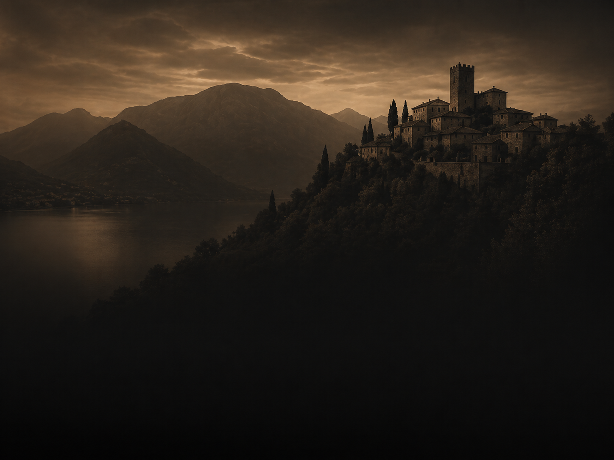
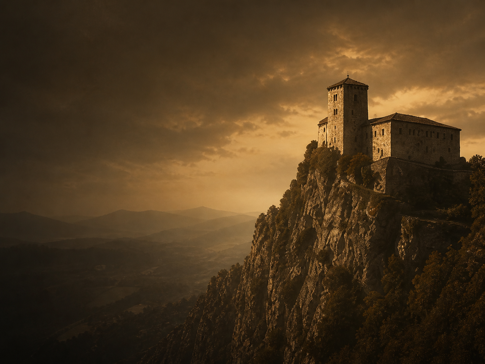
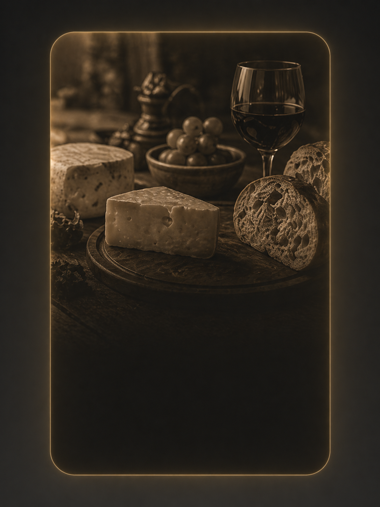

Panorama
Belvedere del Lago
Una terrazza naturale da cui osservare il profilo del territorio, ideale al tramonto.
Scorci da scoprire
Una terrazza naturale da cui osservare il profilo del territorio, ideale al tramonto.

Vie in pietra, piccole piazze e scorci antichi da attraversare con passo lento.

Un punto monumentale che racconta la storia difensiva e simbolica del territorio.

Una sosta dedicata ai prodotti locali, tra degustazioni, tradizioni e racconti.
L'assistente può combinarli in un itinerario coerente con tempo, interessi e livello di difficoltà.